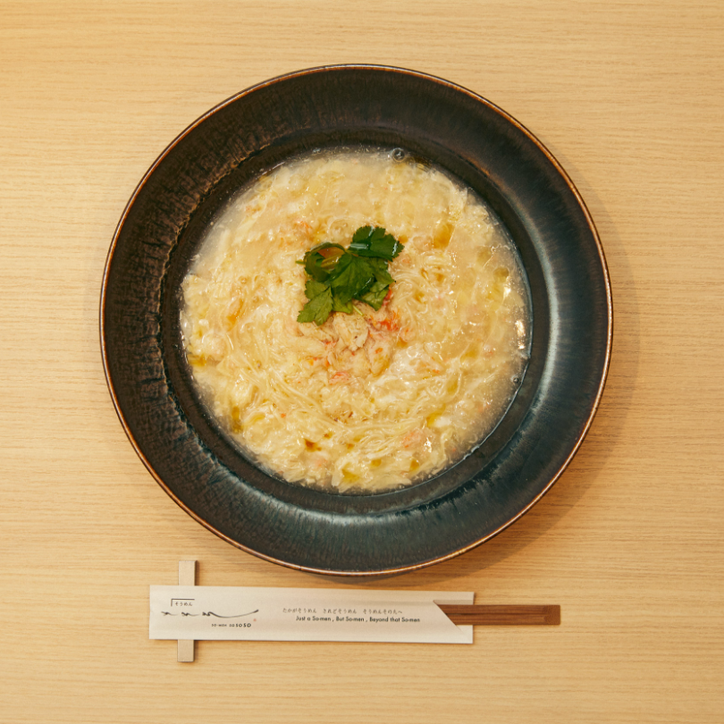
2022.03.30

そうめんの概念を覆し、新たな可能性を追求し続ける『そうめん そそそ』。恵比寿、日比谷、渋谷にそれぞれ店舗を構えるが、その中でも特に食材にこだわった料理を提供するのが日比谷にある『そそそ 〜その先へ〜』だ。
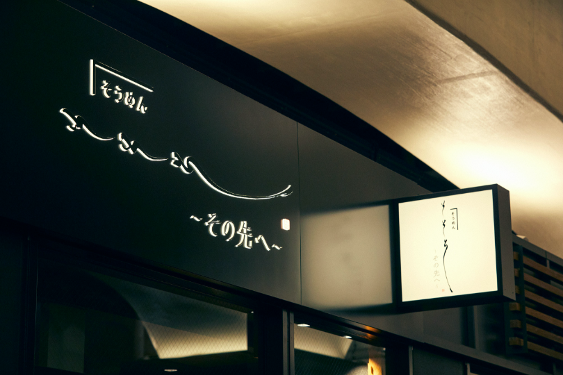
そもそもなぜそうめん専門店を立ち上げたのか。高級なそうめん料理とは。立ち上げと監修を務める安藤成子さんにお話を伺った。
そうめんがこんなに
美味しいものだとは
和食と和菓子をご提供する『楚々 The Zen』というお店を代官山で営んでいるのですが、ある時、友人から「締めにそうめんをだしてみたら？」とすすめられたのがきっかけ。その時に食べた香川県・小豆島のそうめん〈島の光〉が驚くほど美味しくて。私が知っているそうめんとはまったく違うものでした。
すっかりそうめんの魅力にハマってしまった私は、この感動をもっといろんな人に知ってもらいたいと思い、勢いのまま、2018年にそうめん専門店『そうめん そそそ』を恵比寿にオープンさせてしまったんです（笑）
もっともっと
可能性があると思った
恵比寿店では、自宅でも真似できそうな比較的カジュアルなメニューを展開しているのに対して、日比谷店では高級食材を使ったもっと特別な料理を展開しています。そうめんの新しい可能性を追求してみたくなったんです。
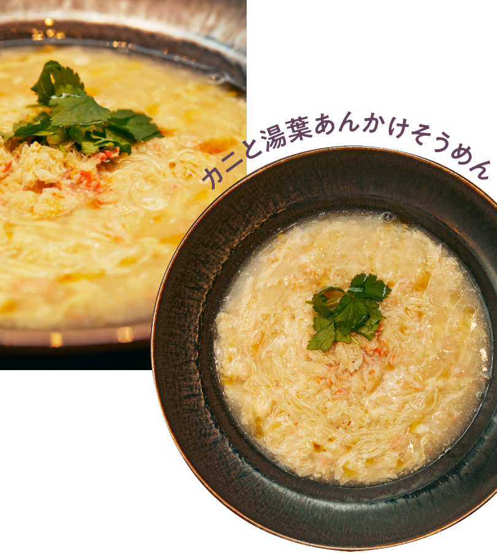
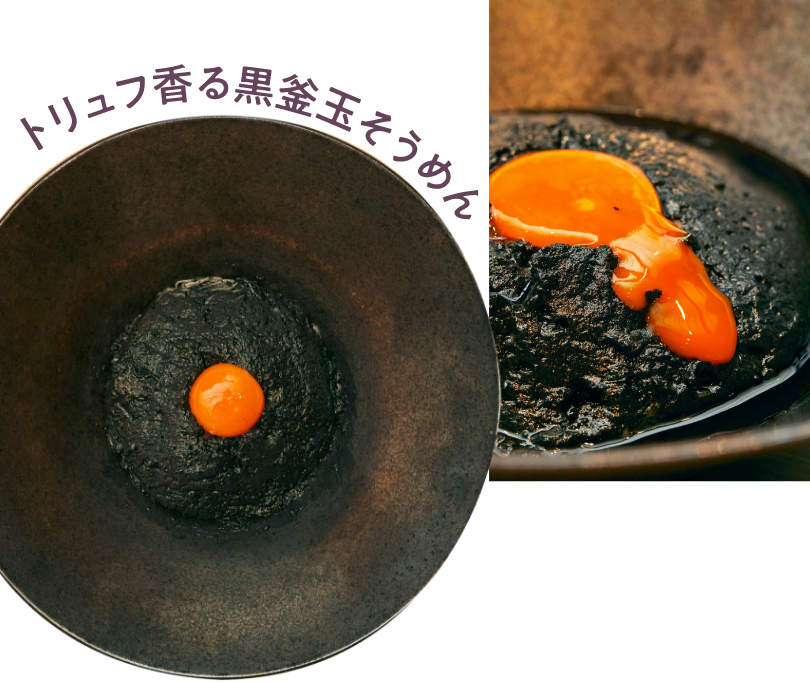
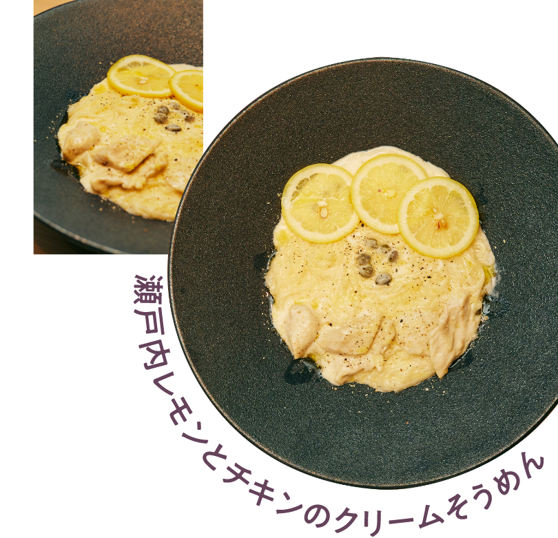
〈島の光〉には赤帯、黒帯、金帯とランク分けがされているのですが、恵比寿店では赤帯を使用しているのに対して、日比谷店では北海道産の小麦を使用した黒帯を使用。香りが違います。
食材もカニやフカヒレ、トリュフなど高級食材を積極的に使用。ご自宅では味わえない特別なものをご提供するようにしています。
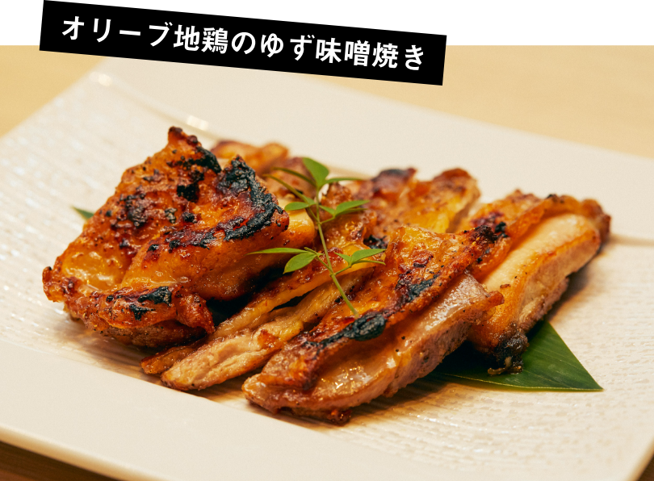
香川の食文化に惚れ込んで
食材は基本的に、そうめんと同じ香川県産のものにこだわっています。香川は本当に食材の宝庫。野菜もお魚も本当に美味しいんです。ここで提供しているジェラートも香川県小豆島のMinoriジェラートさんのものなんですよ。
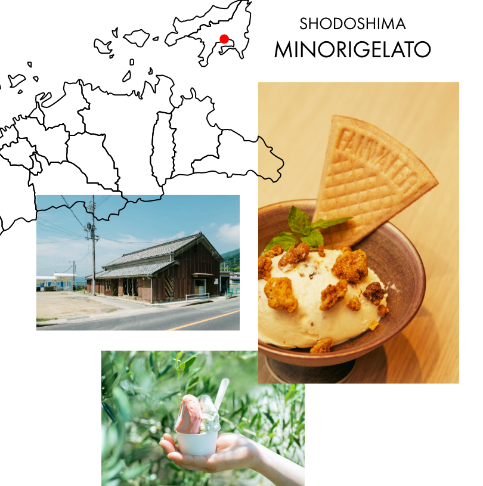
自然派にこだわりたい
また日比谷店では自然派ワインも提供しています。そうめんとワインってあまりカップリングの印象がないと思うんですが、自然派ワインだとすごく相性がいいんです。コーヒーも無農薬。ヘイガンコーヒーさんにご協力をいただいて、和菓子にもあうコーヒーをオリジナルで作っていただきました。
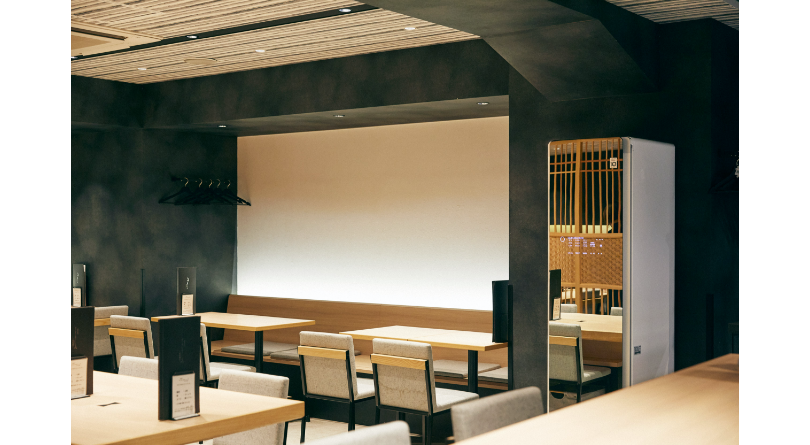
私の周りにLG Stylerを使っている人がたくさんいて、いつもすごくいいよってすすめられていたんです。だから個人的にいつかと思っていたのと、日比谷店はジャケットをお召しになる会社勤めの方や、場所柄良いお召し物を着ていらっしゃるお客様がいいので、喜んでいただけるかなと思って導入しました。
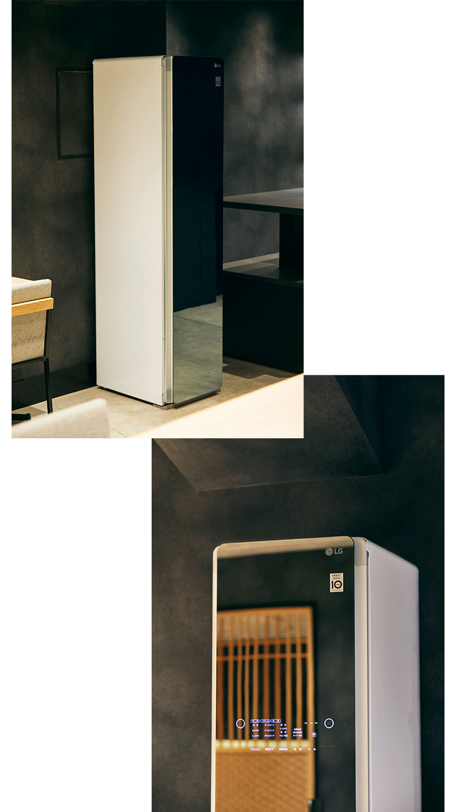
導入したのはミラータイプ。ミラー部分に店内のインテリアが映り込むことで奥行きが生まれ、シックな空間にも自然に馴染む。
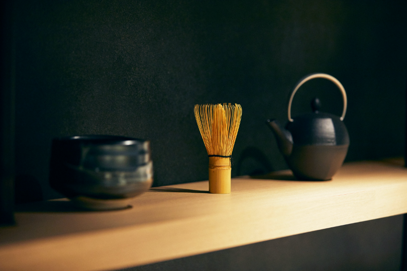
閉店後に私もコートを入れてみたのですが、帰り道が幸せ気分。ダウンもやってみたのですが買ったばかりみたいにふわふわになりました。スタッフからも部屋にあるぬいぐるみを入れてみたとか、服についてしまったタバコ臭さが消えたとか、評判はすごくいいですね。
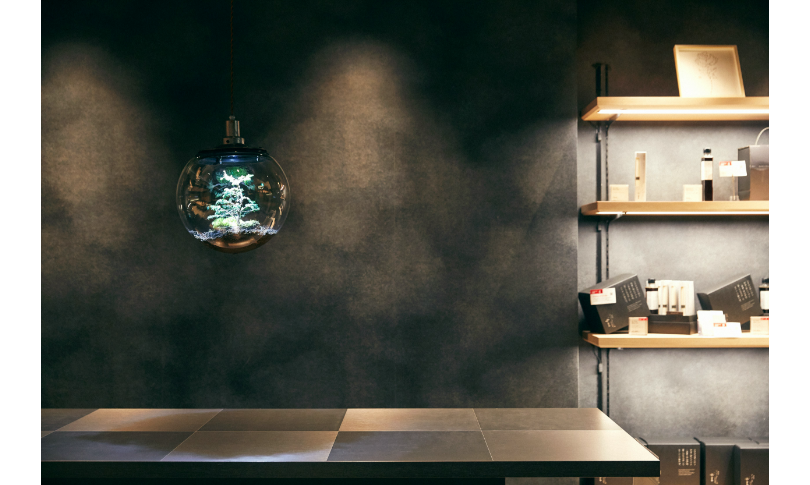
海外でそうめんを広めたい
2018年にNYでそうめんを広める活動をしたのですが、それがすごく評判が良かったんです。たくさんの人が『お店はどこに店あるの？』って聞いてくれて。『ソーメン！ソーメン！』って盛り上がってくれたり（笑）。だから自由に行き来できるようになったら、挑戦したいと思っています。
そうめんの概念を覆し、新たな可能性を追求し続ける『そうめん そそそ』。恵比寿、日比谷、渋谷にそれぞれ店舗を構えるが、その中でも特に食材にこだわった料理を提供するのが日比谷にある『そそそ 〜その先へ〜』だ。
美味しいものだとは
可能性があると思った
食材もカニやフカヒレ、トリュフなど高級食材を積極的に使用。ご自宅では味わえない特別なものをご提供するようにしています。